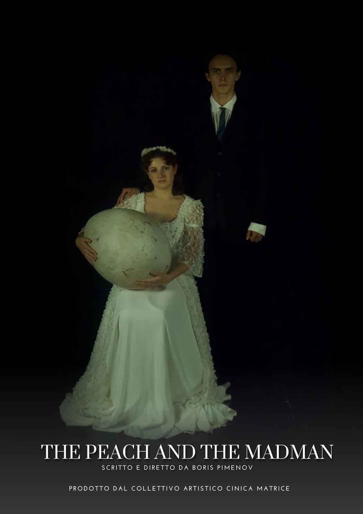

Cinica Matrice

Note
Cinica Matrice: un laboratorio multidisciplinare per una scena ibrida
Nata dalla visione delle giovani menti fondatrici Sveva Gini e Boris Pimenov, Cinica Matrice è un collettivo artistico multidisciplinare che si propone come avanguardia nella fusione tra linguaggi performativi tradizionali e le potenzialità espressive delle nuove tecnologie.
Il progetto, incubato nell'ecosistema creativo di Sartoria Caronte, si costituisce come gruppo autonomo con una missione precisa: esplorare i territori di una scena contemporanea ibrida, dove corpo, voce, immagine e dato digitale convergono. La sperimentazione si orienta verso l'utilizzo di linguaggi audiovisivi immersivi, interattività, live media e ogni strumento tecnologico in grado di ridefinire l'esperienza dello spettacolo dal vivo e delle arti visive.
Sotto una supervisione non invadente di professionisti del settore, i giovani artisti del collettivo — formatisi attraverso il percorso laboratoriale under 25 curato da Loris Seghizzi — guadagnano una totale libertà nella ricerca. Questo permette a Cinica Matrice di tracciare un percorso pionieristico, dove la freschezza generazionale si misura con l'innovazione tecnologica per creare nuove drammaturgie e ambienti sensoriali.
Il loro primo prodotto, l'audiovisivo sperimentale The Peach and the Madman diretto da Boris Pimenov, è una prima dichiarazione d'intenti in questa direzione. L'obiettivo finale del collettivo è consolidarsi come compagnia di ricerca permanente, un vero e proprio ponte verso il futuro del teatro e della performatività a Lari e oltre, dimostrando come la tecnologia, quando integrata con sensibilità poetica, possa generare un rinnovamento radicale del fare artistico.